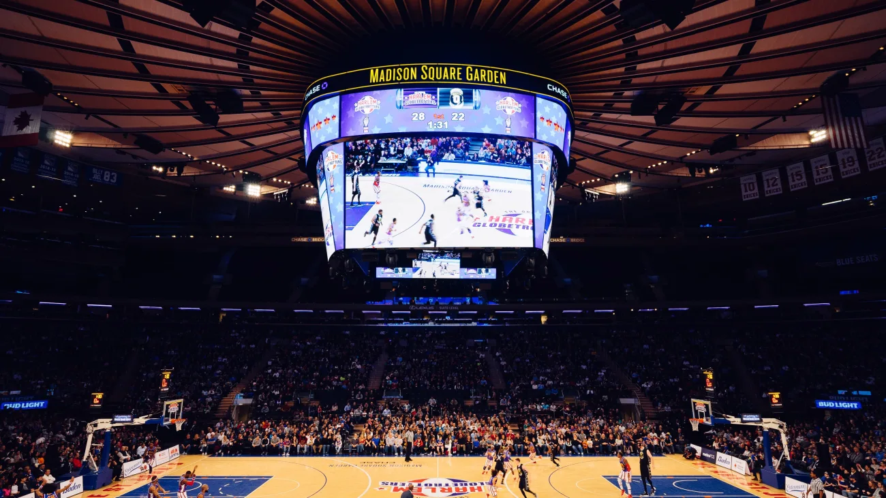

New York Knicks - Fundada em 1946, a equipe dos New York Knicks é uma das franquias mais tradicionais da NBA. Apesar de um longo jejum sem títulos desde o último campeonato em 1973, os Knicks têm uma base de fãs apaixonada e uma história rica, com destaque para grandes jogadores como Walt Frazier, Bill Bradley e, mais recentemente, Patrick Ewing. O time compete na Conferência Leste e é conhecido pela sua defesa sólida e cultura de trabalho duro.
Elenco - Jalen Brunson (#11), Julius Randle (#30), RJ Barrett (#9), Mitchell Robinson (#23), Quentin Grimes (#6), Josh Hart (#3), Evan Fournier (#13), Isaiah Hartenstein (#55).
Títulos NBA - 2 (1970, 1973)
Títulos Conferência - 2 (1994, 1999)
Estádio - Madison Square Garden (19.812)
